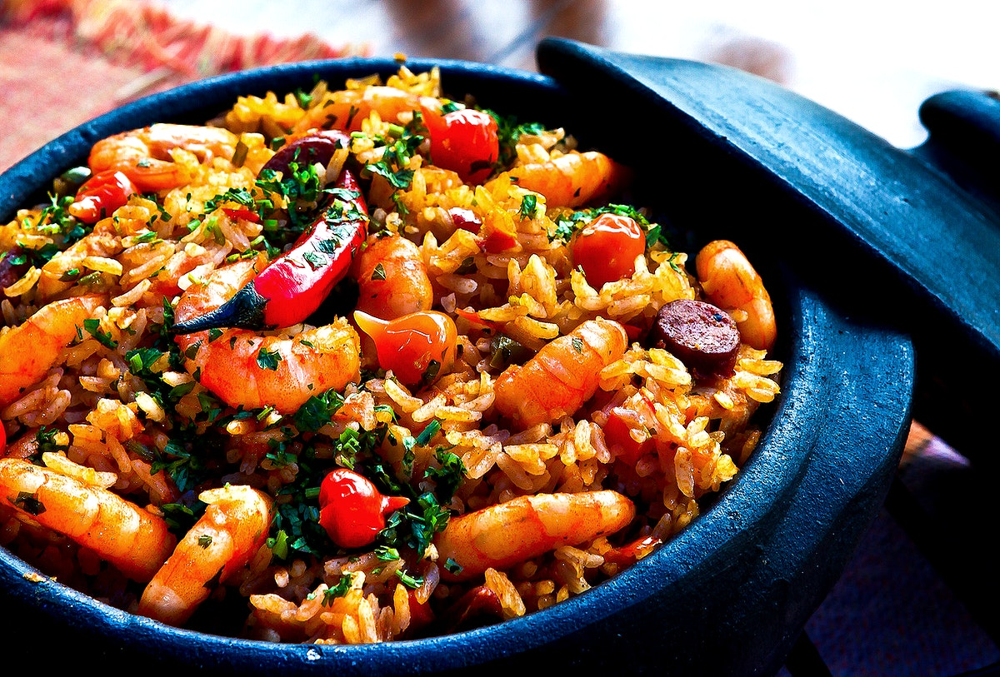

Paella With Tomatoes
A common Recipe in the Sellers house.

I got this pucture from The Atlantic Coco Cola Bottling Company. It is public Domain. Rawpixel.com
I picked this recipe because we have it about every two weeks. Basically every person in our house loves it and it never misses. My dad loves cooking it.
If theres one recipe that you HAVE to do it is the Paella, it is to die for.-My Stepmother.
This Paella is my first recipe. It is cooked with tomatoes to add flavor and texture. Lets get into it.
INGREDIENTS
| Water |
3.5 Cups |
| Ripe Tomatoes |
1.5 Pounds |
| Salt |
1 TBSP |
| Black Pepper |
1 TBSP |
| Extra Virgin Olive Oil |
1/4 CUP |
| Onion |
1 Onion |
| Garlic |
1 TBSP |
| Tomato Paste |
1 TBSP |
| Spanish Pimenton |
2 TSP |
| Spainish Rice |
2 Cups |
| Minced Parsley |
To your desire |
Instructions:
- Preheat Oven to 450 degrees. Warm water in a saucepan. Put tomatoes in a medium bowl, sprinkle with salt and pepper, and drizzle them with 1 tablespoon olive oil. Toss to coat.
- Put remaining oil in a 10-12 inch ovenproof skillet over medium-high heat. Add onion and garlic, sprinkle with salt and pepper, and cook, stirring occasionally, until vegetables soften, 3-5 minutes. Stir in tomato paste, and paprika and cook for a minute or more. Add rice and cook, stirring occasionally, until it is shiny, another minute or two. Add liquid and stir until just combined.
- Put tomato wedges on top of rice and dribble with juices that accumulated at the bottom of bowl. Put pan in oven and roast, undisturbed, for 15 minutes. Check to see if rice is dry and just tender. If not, return pan to oven for another 5 minutes. If rice looks too dry but still is not quite done, add a small amount of stock water (or whine). When rice is ready, turn off oven and let pan sit for 5-15 minutes.
- Remove pan from oven and sprinkle with parsley. If you like, put pan over high heat for a few minutes to develop a bit of bottom crust before serving.
- ENJOY!